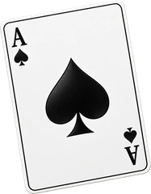
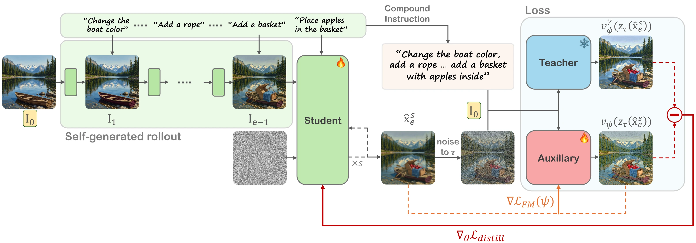

Self-generated rollouts
The student trains on chains of edits, each applied to its own previous output, just as at inference.

ACEditStable Multi‑Turn Image Editing* Equal contribution
Tel Aviv University
TL;DR
Image editors are trained on clean images, but in multi-turn editing they must edit their own outputs, causing small errors to accumulate. We reduce this train–inference gap by training on the editor’s own rollouts, guided by a teacher anchored to the original image and conditioned on a compound editing instruction.
Image editing models produce impressive results for individual edits, but their quality often deteriorates over multiple editing turns. Each editing turn introduces small distribution shifts that accumulate over successive edits, creating a gap between the input distributions encountered during the editor’s original training and multi-turn inference. We introduce a training scheme that makes multi-turn image editing stable under this accumulating distribution shift.
A key is to force the editor to operate on its own outputs from previous editing turns during training, bringing the principle of Self-Forcing to image editing. The main challenge is that self-generated editing trajectories deviate from ground-truth trajectories, making direct supervision unreliable. We address this challenge through a distillation objective that leverages a teacher image editor to provide a reliable training signal when the model operates on its own previous outputs.
We introduce an asymmetric conditioning scheme: while the student performs edits sequentially on its own outputs, the teacher remains anchored to the original clean image and receives a compound editing instruction. Experiments show substantially reduced degradation over long multi-turn sequences while maintaining editing quality and instruction adherence.
In multi-turn editing, every output becomes the next input. Small errors compound: colors drift and details wash out, even when the editor is asked to change nothing.

The student trains on chains of edits, each applied to its own previous output, just as at inference.
The teacher sees the clean source image and a compound instruction, never the student’s drifted outputs.
No ground-truth targets needed: a teacher and an auxiliary editor supervise the student’s output distribution.
Student
Edits its own outputs, one instruction at a time. I1–I3 may already have drifted.
Teacher
Scores the same output as one compound edit of the clean source, so its signal never depends on drifted images.
clean source student’s own output output being trained (x4)
FLUX.2 Klein before and after our fine-tuning, with the same instructions and seed. Each displayed instruction is followed by no-op instructions (“keep the image as is”), and the images show the results after those no-ops.